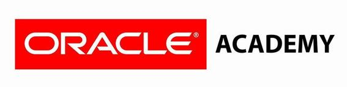
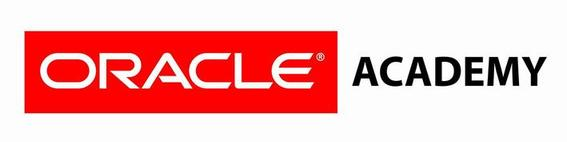
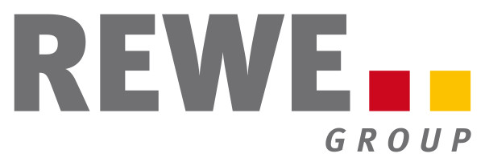
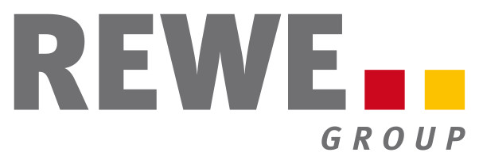

IES Campanillas
Málaga (España)
Instituto público de Enseñanza Secundaria, Bachillerato y Ciclos Formativos.
iescampanillas.comOferta educativa
- EDUCACIÓN SECUNDARIA OBLIGATORIA (ESO)
- EDUCACIÓN ESPECIAL
-
BACHILLERATO
- Ciencias de la Naturaleza y la Salud
- Humanidades y Ciencias Sociales
-
FORMACIÓN PROFESIONAL BÁSICA
- Mantenimiento de Edificios
- Auxiliar de Informática
-
CICLO FORMATIVO GRADO MEDIO (CFGM)
- Instalaciones de Telecomunicaciones
- Sistemas Microinformáticos y Redes
-
CICLO FORMATIVO GRADO SUPERIOR (CFGS)
- Desarrollo de Aplicaciones Web
Oferta educativa de ciclos formativos
-
CICLO FORMATIVO GRADO MEDIO (CFGM)
- Instalaciones de Telecomunicaciones
- Sistemas Microinformáticos y Redes (bilingüe)
-
CICLO FORMATIVO GRADO SUPERIOR (CFGS)
- Desarrollo de Aplicaciones Web (bilingüe)
Ciclo Formativo de Grado Superior
Desarrollo de Aplicaciones Web

Edificio CITIC. C/ Pierre Laffitte, 6 - 8. CP 29590 Málaga
Parque Tecnológico de Andalucía
Desarrollo de Aplicaciones Web
- Primer curso 3 trimestres de clases
- Segundo curso 2 trimestres de clases
- Segundo curso 1 trimestre de prácticas en empresa
2000 horas lectivas contando la FCT
Módulos de 1º DAW
- Programación
- Bases de datos
- Lenguajes de marcas
- Entornos de desarrollo
- Sistemas informáticos
- Formación y orientación laboral
Programación
- Variables
- Entrada y salida de datos
- Sentencia condicional (if y switch)
- Bucles
- Números aleatorios
- Arrays
- Funciones
- Programación orientada a objetos
- Colecciones y diccionarios
- Ficheros y paso de parámetros por línea de comandos
- Aplicaciones web en Java (JSP)
- Acceso a bases de datos desde Java
Bases de datos
- Diseño de bases de datos relacionales
- SQL
- Aplicación en SqlServer, Oracle y MySql
- Bases de datos objeto-relacionales en Oracle.
Entornos de desarrollo
- Metodologías de desarrollo
- Introducción a Metrica v3
- Diagramas de clases
- Diagramas de casos de uso
- Diagramas de interacción: colaboración y secuencia
Lenguajes de Marcas
- HTML
- CSS
- XML
- XQuery
Sistemas Informáticos
- Historia de la informática, concepto de sistema informático
- Hardware del sistema (procesador, memoria, placa, almacenamiento)
- Montaje de equipos
- Sistema operativo Windows 7 (versiones e instalación usuarios, grupos, permisos, red, gestión avanzada del sistema)
- Sistema operativo Linux (distribuciones e instalación de Debian, instalación de paquetes y repositorios, usuarios, permisos, directorios, comandos usuales, Shell scripts, cron, configuración de la red, NFS, SAMBA)
Formación y orientación laboral
- Prevención
- Derecho laboral
- Orientación
Módulos de 2º DAW
- Desarrollo web en entorno servidor
- Desarrollo web en entorno cliente
- Despliegue de aplicaciones web
- Desarrollo de interfaces web
- Empresa e iniciativa emprendedora
- Horas de libre configuración (inglés)
Desarrollo web en entorno servidor
- PHP
- PHP + MySQL
- Programación Orientada a Objetos con PHP
- Modelo Vista Controlador
- Twig
Desarrollo web en entorno cliente
- HMTL DOM
- Javascript
- JQuery, JQuery Ajax, JQuery UI
- AngularJS
Despliegue de aplicaciones web
- Servicios FTP y HTTP
- Configuración de Servidor WEB (IIS y APACHE)
- Alojamiento web
- Gestores de contenido
Desarrollo de interfaces web
- Nociones básicas de diseño
- HTML 5
- CSS 3
- Bootstrap
- Programas de diseño vectorial y retoque fotográfico
Empresa e iniciativa emprendedora
- Idea de negocio
- El entorno de la empresa
- Estudio de mercado
- Financiación, contabilidad, rentabilidad
- Forma jurídica
- Trámites de creación
- Fiscalidad
- Documentos de pago
Horas de libre configuración (Inglés)
- Business English: Preparación del certificado Cambridge English Business Preliminary Level B1
- Oratoria: Competencias comunicativas. Hablar en público
- Coaching: Planificación de objetivos, organización del tiempo
- Entrevistas y curricula
- Taller de 20h de alemán (nivel básico A1)
Tecnologías y herramientas


Certificaciones profesionales

 

Prácticas en empresas del PTA y Málaga
Dos periodos (380 horas) de prácticas en empresas
1. Desde marzo a junio
2. Desde septiembre a diciembre
Prácticas en la Unión Europea
- IES Campanillas Centro Erasmus+ (2014-2020), para Grado Superior
- 10-15 alumnos cada año del Ciclo Formativo de Grado Superior
- Destinos actuales: Colonia, Hannover y Dusseldorf (Alemania)
- Otros destinos anteriores: Helsinki y Kouvola (Finlandia) y Cork (Irlanda))
- Oportunidades laborales
- Posibilidad FP Dual
- Curso Aleman A1/A2
- Curso Inglés B1/B2
Empresas colaboradoras en la Unión Europea


 
